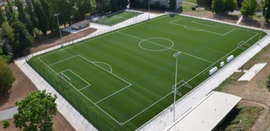

Parmi toutes les choses de la page précedente, la chose que je préfère vraiment est le foot car c'est ma passion depuis que je suis tout petit. Le football est un sport collectif se pratiquant sur un terrain en herbe rectangulaire de longueur 120 mètres et de largeur 90 mètres. Dans chaque équipe il y a 11 joueurs dont un gardien et un capitaine( qui peut aussi être le gardien). Pour marquer 1 point il faut marquer un but. Le but fait 7,32 mètres de long pour 2,44 mètres de haut. Un match dure 90 minutes Le gardien doit essayer d arrêter les ballons. Il existe trois autres postes au football: les défenseurs, qui doivent empêcher les tirs des adversaires, les milieux de terrain qui sont chargés de mener le ballon vers le but adverse et de distribuer le jeu et les attaquants qui doivent marquer dans le but adverse. Il existe plusieurs règles comme le penalty, le coup franc, le corner, le hors-jeu, les touches ou encore les 6 mètres. L'arbitre doit s assurer que les règles sont réspectées et qu il n y ait ni disputes ni conflit entre les joueurs. Il existe 2 sanctions qui sont le carton jaune, qui est un avertissement et le carton rouge qui est une expulsion définitive du joueur pendant le match. Selon la gravité de la situation, le joueur ayant reçu le carton rouge peut avoir 1,2,3 ou 4 matchs de suspension, c'est à dire qu il n aura pas le droit de jouer. Les valeurs du foot sont: le plaisir, l'engagement, le respect, la tolérance et la solidarité.
